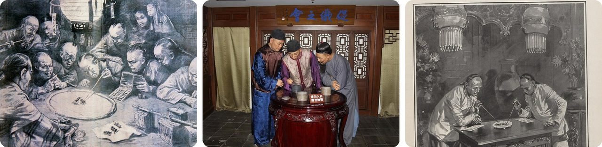
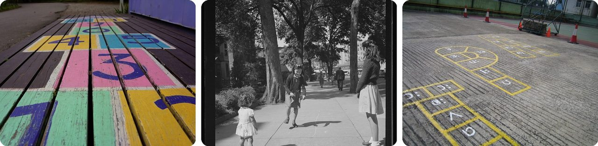

🌍 톱 10 귀뚜라미 싸움과 옛날 중국 아이들의 놀이
2026년 11월 22일
1. 🇨🇳 중국 싸움 귀뚜라미는 시합 전에 풀줄기로 간지럼을 타요

중국의 귀뚜라미 싸움(斗蟋蟀)은 수컷 귀뚜라미 두 마리를 작은 통 안에서 맞붙게 하는 거예요. 먼저 몸무게를 재요. 시합을 몸무게끼리 맞추기 때문이에요. 상하이에서는 0.51그램부터 0.74그램까지 아홉 체급이 있어서, 싸움 귀뚜라미 한 마리는 클립 하나보다 가벼워요.그다음 주인은 가는 풀줄기로 자기 귀뚜라미의 더듬이를 간질여서 화나게 해요. 가운데 칸막이를 들어 올리면 두 귀뚜라미가 달려들어요. 먼저 뒷걸음질 치거나, 도망가거나, 울음을 멈추거나, 통 밖으로 뛰어나가는 쪽이 져요.
그런데 반전이 있어요. 진 귀뚜라미를 다시 링에 넣으면 10번 중 1번만 다시 싸워요. 하지만 먼저 흔들어서 공중에 몇 번 던져 주면, 10번 중 6번은 다시 싸워요.
한마디로, 잠깐 '날아 보기'가 귀뚜라미한테는 응원이에요.
2. 🇨🇳 한 재상의 귀뚜라미 취미가 나라가 망한 탓으로 꼽혔어요
 귀뚜라미 싸움은 1,000년도 더 된 놀이로, 당나라 황제들이 즐겼고 나중에 보통 사람들도 하게 됐어요. 1200년대에는 남송의 재상 가사도가 귀뚜라미 싸움 안내서까지 썼어요.
귀뚜라미 싸움은 1,000년도 더 된 놀이로, 당나라 황제들이 즐겼고 나중에 보통 사람들도 하게 됐어요. 1200년대에는 남송의 재상 가사도가 귀뚜라미 싸움 안내서까지 썼어요.
그가 너무 푹 빠져서, 그 귀뚜라미 취미가 나라를 무너뜨리는 데 한몫했다고 여겨져요. 한참 뒤 문화대혁명(1966–1976) 때는 중국 정부가 귀뚜라미 싸움을 부자들의 취미라며 금지했어요.
그래도 다시 돌아왔어요. 2010년 중국 사람들이 귀뚜라미에 쓴 돈은 4억 위안(약 6,300만 달러)이 넘었고, 상하이에만 귀뚜라미 시장이 열 곳 넘게 있어요.
그 취미를 사랑한 나라보다 취미가 더 오래 살아남은 셈이에요.
3. 🇨🇳 중국 귀뚜라미는 틀 안에서 자란 박 속에서 겨울을 났어요
 중국에서 기르던 귀뚜라미는 여름엔 흙 항아리에, 겨울엔 박(껍질이 단단한 열매, 작은 호박 같은 것) 안에서 살았어요. 가장 고급스러운 박은 조각한 게 아니었어요. 그 모양으로 키운 거였어요.
중국에서 기르던 귀뚜라미는 여름엔 흙 항아리에, 겨울엔 박(껍질이 단단한 열매, 작은 호박 같은 것) 안에서 살았어요. 가장 고급스러운 박은 조각한 게 아니었어요. 그 모양으로 키운 거였어요.
궁궐 정원사들은 갓 열린 작은 박을 무늬를 새긴 틀 안에 넣었어요. 박이 자라면서 틀을 꽉 채우고 무늬까지 그대로 따라 했죠. 오랫동안 이런 박은 황제가 사는 궁궐인 자금성에서만 만들 수 있었어요. 뚜껑도 귀뚜라미 노랫소리가 더 좋게 들리도록 깎았어요.
지금 남아 있는 가장 오래된 틀 박은 1238년 것으로, 일본의 한 절에 보관돼 있어요. 옹정제는 잠잘 때조차 박을 손에 쥐고 있었어요.
다시 말해, 귀뚜라미 집은 지은 게 아니라 밭에서 키운 거예요.
4. 🇨🇳 젠쯔는 발로 차는 셔틀콕이에요
 젠쯔(毽子)는 손만 빼고 몸 어디로든, 주로 발로 무거운 셔틀콕을 계속 공중에 띄우는 놀이예요. 보통 고무 받침에 깃털 네 개를 꽂은 모양이고, 무게는 15~25그램으로 프린터 종이 네 장쯤이에요.
젠쯔(毽子)는 손만 빼고 몸 어디로든, 주로 발로 무거운 셔틀콕을 계속 공중에 띄우는 놀이예요. 보통 고무 받침에 깃털 네 개를 꽂은 모양이고, 무게는 15~25그램으로 프린터 종이 네 장쯤이에요.
중국에서는 2,200여 년 전에 시작된 한나라 때부터 젠쯔를 했어요. 군사 훈련에 쓰던 축구 비슷한 옛 놀이 '축국'에서 나왔어요. 5~10명이 둥글게 서서 그냥 안 떨어뜨리려고 차기도 해요.
1936년, 장쑤성 출신의 중국 선수가 베를린 올림픽에서 젠쯔를 선보였고, 독일 사람들도 따라 하기 시작했어요. 베트남에서는 '다꺼우(đá cầu)'라고 부르고, 나라를 대표하는 운동이에요.
깃털 달린 제기차기라고 보면 돼요.
5. 🇨🇳 중국 요요는 속이 비어서 윙윙 소리가 나요
 중국 요요, 디아볼로(抖空竹, dǒu kōngzhú)는 바퀴 두 개가 달린 실패를 두 막대 사이에 맨 줄 위에서 돌리는 장난감이에요. 1572년에서 1620년 사이, 명나라 말기의 한 책은 이걸 '공중(kōngzhōng)', 곧 '공기 종'이라고 불렀어요.
중국 요요, 디아볼로(抖空竹, dǒu kōngzhú)는 바퀴 두 개가 달린 실패를 두 막대 사이에 맨 줄 위에서 돌리는 장난감이에요. 1572년에서 1620년 사이, 명나라 말기의 한 책은 이걸 '공중(kōngzhōng)', 곧 '공기 종'이라고 불렀어요.
그 이름에 비밀이 있어요. 바퀴는 속이 비어 있고 구멍이 뚫려 있어요. 빨리 돌면 공기가 구멍으로 휙휙 지나가면서 커다란 윙윙 소리가 나요. 고수는 1분에 2,000바퀴, 그러니까 1초에 약 33바퀴까지 돌릴 수 있다고들 해요.
1792년 한 선교사가 베이징에서 이 장난감을 기록했고, 그 뒤 유럽에서 크게 유행했어요. 얼마나 난리였는지 파리 경찰청장이 길거리에서 못 하게 금지한 적도 있어요.
그러니까 악기 노릇까지 하는 장난감이에요.
6. 🇨🇳 중국의 채찍 팽이는 3,000년이 넘었어요
 팽이는 알려진 장난감 중 가장 오래된 것으로, 사람이 사는 모든 대륙에서 발견됐어요. 중국에서는 고고학자들이 기원전 1250년쯤의 팽이를 찾아냈는데, 그중엔 채찍 팽이도 있었어요. 그러니까 그곳 사람들은 약 3,270년 동안 팽이를 돌려 온 거예요.
팽이는 알려진 장난감 중 가장 오래된 것으로, 사람이 사는 모든 대륙에서 발견됐어요. 중국에서는 고고학자들이 기원전 1250년쯤의 팽이를 찾아냈는데, 그중엔 채찍 팽이도 있었어요. 그러니까 그곳 사람들은 약 3,270년 동안 팽이를 돌려 온 거예요.
채찍 팽이는 이렇게 해요. 채찍 끈을 팽이에 감은 다음, 손잡이를 휙 휘둘러요. 끈이 풀리면서 팽이를 빙글빙글 돌며 날려 보내요.
중국 일부 지역에서는 이족, 와족, 야오족, 먀오족 사람들이 지금도 팽이를 돌려요. 1995년부터는 팽이 돌리기가 중국 소수민족 전통 체육대회 종목이 됐어요.
한마디로, 채찍 한 번 휘둘러야 시작되는 장난감이에요.
7. 🇨🇳 고무줄놀이는 점점 높아지는 커다란 고무줄이에요
 중국식 고무줄놀이(跳皮筋, tiàopíjīn)는 고무줄이나 잘 늘어나는 줄을 동그랗게 이은 걸 써요. 길이는 적어도 6피트로, 어른 키쯤 돼요. 두 아이가 고리 안에 서서 발목에 걸고 팽팽하게 당겨요.
중국식 고무줄놀이(跳皮筋, tiàopíjīn)는 고무줄이나 잘 늘어나는 줄을 동그랗게 이은 걸 써요. 길이는 적어도 6피트로, 어른 키쯤 돼요. 두 아이가 고리 안에 서서 발목에 걸고 팽팽하게 당겨요.
세 번째 아이가 양쪽 줄 사이에서 '안', '밖', '옆', '위'라는 동작을 하며 뛰어요. 노래를 부르면서 할 때가 많아요. 실수 없이 다 해내면 줄이 올라가요. 발목에서 허리까지, 그보다 더 높이도요.
이 놀이는 전 세계로 퍼졌어요. 영국과 오스트레일리아에서는 'elastics', 어떤 곳에서는 'French skipping', 필리핀에서는 'Chinese garter'라고 불러요.
춤추듯 통과해야 하는 높이뛰기 막대라고 생각하면 돼요.
8. 🏠 중국에서는 사방치기를 '집 뛰기'라고 불러요

사방치기는 돌멩이 같은 작은 물건을 땅에 그린 숫자 칸에 던진 다음, 칸을 따라 깡충깡충 뛰어가서 주워 오는 놀이예요. 중국에서는 '탸오팡쯔(跳房子)', 곧 '집 뛰기'라고 해요.어디서 시작됐는지는 아무도 정확히 몰라요. 1500년대 이전에 이 놀이가 있었다는 증거는 없고, 나라마다 이름도 제각각이에요. 독일에서는 '천국과 지옥', 이탈리아에서는 '종'이라는 뜻의 이름도 있어요.
기네스 세계 기록에서 가장 빠른 사방치기는 아쉬리타 퍼먼이 세운 1분 2초예요. 양치질 시간의 절반쯤이에요.
칸 하나하나가 한 발로만 놀러 갈 수 있는 작은 집이에요.
9. ⭕ 중국 아이들은 약 3,000년 동안 굴렁쇠를 굴려 왔어요
 굴렁쇠 굴리기는 간단해요. 막대로 큰 고리를 땅 위에서 밀고, 쓰러지지 않게 따라 뛰어가면 돼요. 중국에서는 이 놀이가 기원전 1000년이나 그보다 더 전으로 거슬러 올라간다고 여겨져요.
굴렁쇠 굴리기는 간단해요. 막대로 큰 고리를 땅 위에서 밀고, 쓰러지지 않게 따라 뛰어가면 돼요. 중국에서는 이 놀이가 기원전 1000년이나 그보다 더 전으로 거슬러 올라간다고 여겨져요.
늘 환영받은 건 아니에요. 1840년대 런던 신문들은 '굴렁쇠 골칫거리'에 대해 불평했어요. 아이들의 쇠 굴렁쇠가 자꾸 사람들 정강이를 들이받았거든요. 경찰이 남자아이, 여자아이 할 것 없이 굴렁쇠를 빼앗았지만, 불평은 오히려 늘었어요.
1860년대에는 찰스 배비지가 굴렁쇠 굴리는 남자아이들 때문에 굴렁쇠가 말 다리 밑으로 들어가 기수가 떨어진다고 탓했어요. 1864년에는 굴렁쇠를 상대로 '십자군 전쟁'을 벌인다며 영국 의회에서 조롱을 받았어요.
다시 말해, 굴렁쇠 하나와 막대기 하나로 어른들이 허둥지둥했던 거예요.
10. 🇨🇳 중국 연은 내는 소리 때문에 이름이 붙었어요
 중국에서는 철학자 묵자와 노반이 기원전 400년대에 나무 연을 날렸다고 전해져요. 한나라 때 종이가 발명되자 종이 연이 인기를 끌었어요. 서기 549년에는 연으로 구조 작전 메시지를 전하기도 했어요.
중국에서는 철학자 묵자와 노반이 기원전 400년대에 나무 연을 날렸다고 전해져요. 한나라 때 종이가 발명되자 종이 연이 인기를 끌었어요. 서기 549년에는 연으로 구조 작전 메시지를 전하기도 했어요.
당나라 때 사람들은 연에 대나무 피리와 호루라기를 달아 소리가 나게 했어요. 오늘날 연을 뜻하는 말 펑정(风筝, fēngzheng) 이 여기서 나왔어요. 연이 바람 속에서 내는 소리를 따서 붙인 이름이에요.
지금 산둥성 웨이팡은 세계 연의 수도로 알려져 있어요. 세계에서 가장 큰 연 박물관이 있고, 해마다 4월에 연 축제를 열어요.
그러니까 중국 연은 하늘을 나는 호루라기예요.
재미있는 사실
귀뚜라미 싸움은 유명한 중국 귀신 이야기에도 나와요. 포송령이 쓴 '촉직(싸움 귀뚜라미)'에서는 황제가 귀뚜라미 싸움에 너무 빠져 있어서, 한 소년이 아버지를 구하려고 귀뚜라미로 변해요. 이 이야기는 1740년 '요재지이'에 실려 나왔는데, 이 책은 통째로 신기하고 으스스한 이야기 모음이에요. 이 이야기가 재미있었다면, 그런 옛날 기이한 이야기들도 탐험해 볼 만한 세계예요.
사진 출처 (Wikimedia Commons)
- #1: Grillenkampf in China 1903.jpg by André Castaigne, Public domain
- #1: Shanghai Urban History Development Museum, Cricket Fighting (10178958006).jpg by Gary Todd from Xinzheng, China, CC0
- #1: A cricket match- tickling crickets with rats' whiskers to encourage them to fight. (1910).jpg by unknown, Public domain
- #2: Cricket fighting - container of crickets.jpg by Pauloleong2002, CC BY-SA 4.0
- #2: Chinese crickets.jpg by IvanWalsh.com from Shanghai, China, CC BY 2.0
- #2: Jia Sidao.1.jpg by Unknown authorUnknown author, Public domain
- #3: Cricket cages gourd and ivory 18th-19th centuries CE Qing Dynasty (1644-1911 CE) Beijing China.jpg by Mary Harrsch, CC BY-SA 4.0
- #3: MET 28 186 46.jpg by unknown, CC0
- #3: MET 28 186 7.jpg by unknown, CC0
- #4: Jianzi players.jpg by Janus Bahs Jacquet from Copenhagen, Danmark, CC BY-SA 2.0
- #4: Haikou People's Park - people playing jianzi - 01.jpg by Anna Frodesiak, CC0
- #4: Kick Shuttlecock (Jianzi) (flickr) by mikecogh, CC BY-SA 2.0
- #5: 学空竹的小学生.JPG by 三猎, CC BY-SA 4.0
- #5: 抖空竹的老人 #VSCO #latergram (flickr) by 小飞虹, CC BY-SA 2.0
- #5: 空竹零件.JPG by 三猎, CC BY-SA 4.0
- #6: Chinese top Dagny 1.JPG by Immanuel Giel, CC BY-SA 4.0
- #6: 赣州古城墙边公园玩陀螺的老人 打的人没在照片 (flickr) by Drnantu, CC BY-SA 2.0
- #6: Wooden spinning top and whip.jpg by Fumikas Sagisavas, CC0
- #7: Gummitwist-1998Kinder1.jpg by Werner 19:12, 1 October 2007 (UTC), CC BY-SA 3.0
- #7: PM NE 0303 30.jpg by PMRMaeyaert, CC BY-SA 4.0
- #7: Gummitwist-1998Kinder2.jpg by Werner 19:14, 1 October 2007 (UTC), CC BY-SA 3.0
- #8: 跳房子 Hopscotch - panoramio.jpg by lienyuan lee, CC BY 3.0
- #8: Chinese-American girl playing hopscotch 8d21950v.jpg by Marjory Collins, Public domain
- #8: SJACPS Hopscotch 191210 1.JPG by Honeybee, CC BY 3.0
- #9: 滚铁环的小孩 (flickr) by Drnantu, CC BY-SA 2.0
- #9: Boy with a hoop. (51915119994).jpg by Bernard Spragg. NZ from Christchurch, New Zealand, Public domain
- #9: Boys with hoops on Chesnut Street.jpg by Unknown authorUnknown author, Public domain
- #10: Kite of Chinese dragon.jpg by 虎眉, CC BY-SA 2.5 cn
- #10: Kite Flying Tiananmen Square (flickr) by moonlet.me, CC BY-SA 2.0
- #10: Weifang World Kite Museum.jpg by Ngguls, CC BY-SA 4.0

.jpg){kind=link}
.jpg){kind=link}


_Beijing_China.jpg){kind=link}


.jpg){kind=link}